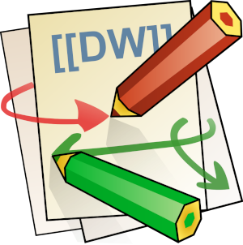

Dokuwiki puede servirnos tanto para tomar nuestras notas, como previsualizar y editar contenido generado por nuestros scripts. En este post os explico como instalar Dokuwiki en tan solo 4 pasos. Doy por hecho que tienes instalado apache2.
sudo apt install apache2
Lo bueno que tiene dokuwiki, es que no tenemos que instalar base de datos y todas nuestras entradas están en formato texto plano.
Hay Versiones estables y no estables. Descargamos con wget, por ejemplo, la versión estable copiando el link de la ruta desde la web de DokuWiki.
Nos situamos en /var/www/html/, raiz de nuestro servidor web y descargamos ahí el archivo comprimido con wget:
Si no tenemos permisos, podremos descargarlo utilizando sudo. Posteriormente, para descomprimir la carpeta, también tendremos que usarlo. sudo wget ..., sudo tar ..., sudo mv ...
wget https://download.dokuwiki.org/src/dokuwiki/dokuwiki-stable.tgz
Descomprimimos el archivo descargado. Si no es este el nombre, utiliza el nombre del archivo.
tar -xzvf dokuwiki-stable.tgz
Renombra la carpeta con el nombre que desees, yo en mi caso, le podré dokuwiki:
mv dokuwiki-stable/ dokuwiki/
Ahora vamos a dar permisos de visualización y edición desde el navegador
sudo chown -R www-data:www-data /var/www/html/dokuwiki
Accedemos desde el navegador web, a la ip de nuestro servidor y la siguiente ruta: http://ip/dokuwiki/install.php
Rellenamos los datos de administrador y pulsamos al final para que se inicie la instalación.
Elimina el archivo install.php
Para poder ver código embebido en html en nuestra dokuwiki, como vídeos de Youtube,etc… accederemos a traves de la cuenta de administrador a:
Administrar -> Parámetros de Configuración
Publicado por Angel el Wednesday 06 February del 2019
También te puede interesar:
Powered by org-bash-blog
Written in OrgMode with Emacs and converted to HTML with Pandoc

Este obra está bajo una licencia de Creative Commons Reconocimiento-NoComercial-CompartirIgual 4.0 Internacional.